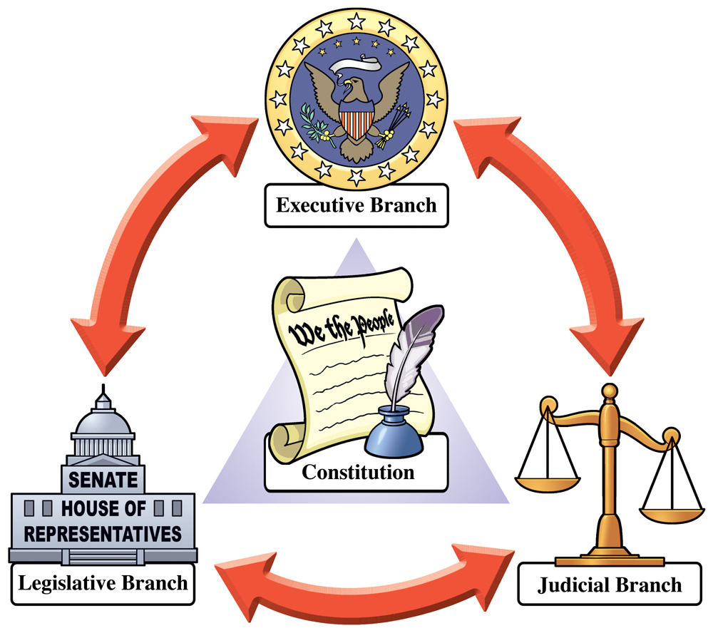

About Checks and Balances
Definition
Checks and balances, or the separation of power, is when a government splits up power among different branches, so one is not too powerful.
In the United States

Congress can pass bills they see fit for America.
The president can veto those bills if they don't agree with them.
Congress can override a veto if they think the president is being unjust.
If the people find this law unjust, or unconstitutional, they can tell the supreme court, who can deem the law as such and get it removed.